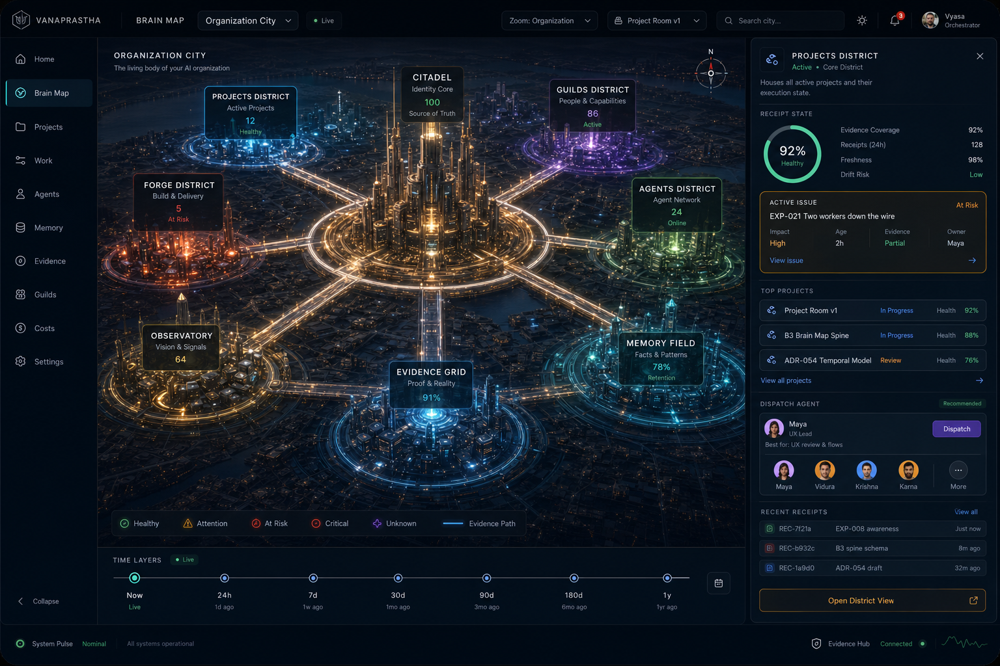
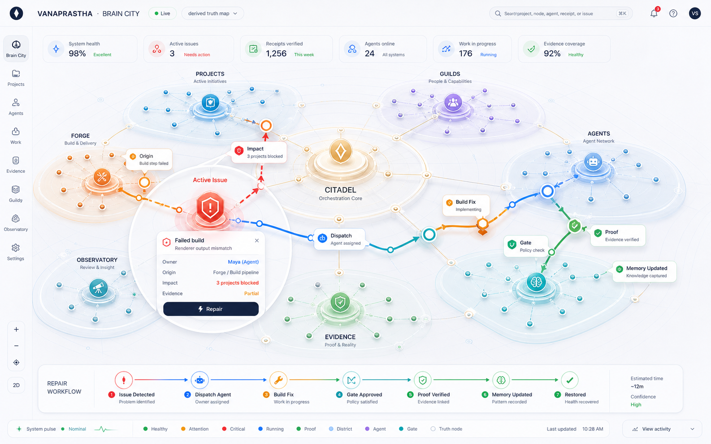
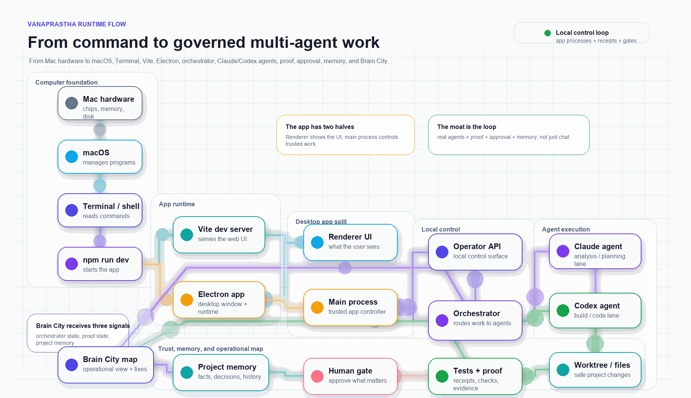
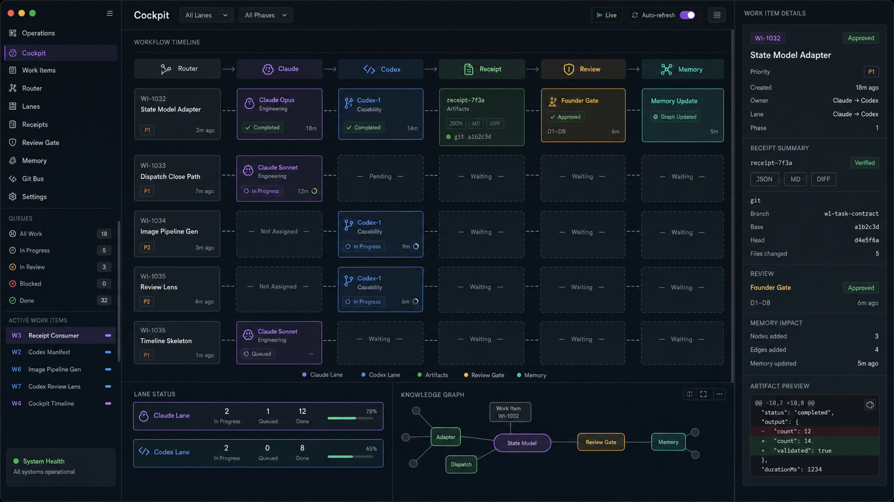
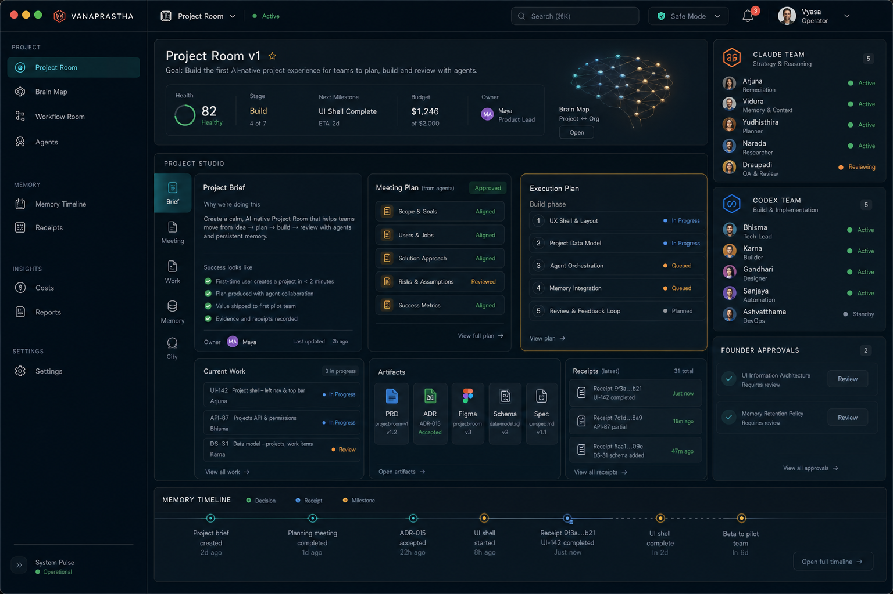
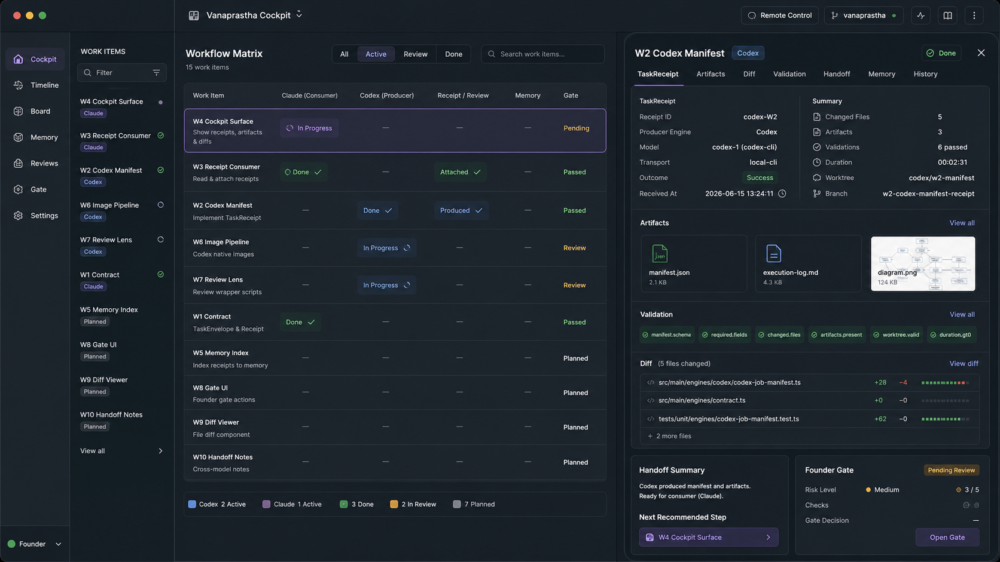

I've spent years inside large institutions like Shell — close to real production systems and the infrastructure that keeps them running.
Vanaprastha is a self-healing, model-agnostic, multi-agent system for AI operations: multiple models (Claude, GPT/Codex, or any LLM you plug in) work the same task, cross-check each other, prove their work, and recover when something breaks — under persistent memory and a human gate. Dependable AI operations, with no lock-in to any single model. Have a look around.

The Citadel holds identity and the source of truth. The Memory Field keeps facts and decisions. The Forge builds and ships. The Evidence Grid proves what's real. The Guilds are the agents; the Observatory watches the signals.
A supervisor watches the whole city — a failing deploy, a stale fact, a drifting agent — finds the trouble and routes it to the right fix, instead of waiting for someone to notice.
Every decision and receipt is kept across agents and sessions, so the city compounds what it learns instead of starting from zero each morning.





Claude and GPT-5 / Codex work the same task side by side — one builds, the other reviews, and they catch each other's mistakes. Different models have different blind spots; together they reach better judgment than either alone.
Plug in any model. Swap Claude for Gemini, an open model, or whatever ships next — via API, a vendor subscription, or self-hosted. The model is a swappable engine; the operating layer is what you own.
Almost any team can stand up an agent that dazzles in a demo. Very few can run one a business will actually depend on. The model isn't the bottleneck — the operating system around it is. Enterprise pilots stall in 'pilot purgatory': clever enough to show, never trustworthy enough to ship.
The reasons are structural, not cosmetic. LLM agents are stateless — they forget across sessions and restart cold. Orchestration is brittle one-shot prompting that fails the moment reality deviates. There are no real guardrails, no human checkpoints, no audit trail, and cost drifts unpredictably as loops run unchecked. Each gap alone is survivable; together they make a system no one will put in front of customers.
Crossing from demo to dependable means treating an agent like production software: persistent memory, governed autonomy, accountable workflows, and bounded cost — by design, not bolted on after the fact.
A raw LLM is stateless. Every session begins from zero: no memory of what was decided, what was tried, or why. The model is brilliant in the moment and amnesiac the next — which makes it a fast tool, not a colleague you can build a real system around.
Vanaprastha closes that loop. Three layers give every agent durable memory: a shared knowledge store, per-agent journals that record craft and hard-won lessons, and deterministic context projection that assembles the right working set at the start of each session — standing state, recent decisions, and the live facts that matter now.
The result is continuity. Decisions land in a shared record, lessons stay private to the agent that learned them, and the next session opens already oriented. Memory is advisory and never overrides live repository state, so the system carries the past forward without ever drifting from the present.
I built Vanaprastha, a self-operating AI organization. An orchestrator dispatches specialist agents — architect, builder, QA, adversarial reviewer, ops supervisor — that run a full SDLC: build, test, review, then a human-gated merge. Two operators sit between them: Vyasa on Claude and Shukra on Codex/GPT-5.5, so the strongest model is matched to each kind of work.
Coordination runs over a typed task contract, and the organization's own machinery — dispatch, pipeline, gates, reads — is exposed to the operators as native tools through an in-app MCP server. Persistent memory (a knowledge store, per-agent journals, and deterministic context projection) means the system resumes with context instead of starting cold each session.
Governance is structural, not advisory: a worker agent may propose but can never self-approve. A human approves every dispatch and every merge, backed by audit trails. Dynamic workflows fan work across many agents in parallel and synthesize the results, and cost is managed FinOps-style with bounded autonomy and token budgets.
The Model Context Protocol (MCP) is an open standard for giving a model real tools: typed, named operations it can call directly instead of describing in prose. Vanaprastha runs its own MCP server inside the app, so the organization's machinery is exposed to the operators as first-class tools.
Through that server, the operators — Vyasa (Claude) and Shukra (Codex) — can dispatch specialist agents, advance the build→test→review pipeline, and read live org state: roadmap, initiatives, agent journals, gate status. The operator becomes a participant in the SDLC, not a chat window bolted on beside it.
Crucially, governance is structural, not a prompt. Approval operations — approving a dispatch, merging to main, raising autonomy — are deliberately absent from the tool surface. A worker can PROPOSE; only the human can APPROVE. The guard is enforced by what the server refuses to expose, so an agent cannot self-approve even if it tries.
Vanaprastha runs a real software lifecycle, not a single chatbot. Work moves through distinct stages — requirements, build, test, and adversarial review — each owned by a specialist agent dispatched over a typed task contract. The agents share persistent memory, so each stage starts with context instead of restarting cold.
Governance is structural, not optional. A worker agent may propose changes but can never approve its own work; the human approves every dispatch and every merge, with an audit trail behind each gate. Bold, autonomous execution inside the stages — a hard human checkpoint before anything ships.
Two operators drive the pipeline across models — Vyasa on Claude and Shukra on Codex/GPT-5.5 — calling the org's own machinery through an in-app MCP server. Cost stays bounded with token budgets and capped autonomy, so the system moves fast without running away.
Autonomous agents are an open spend valve: a reasoning loop that retries, re-reads, and re-plans can quietly burn tokens with nothing to show for it. Vanaprastha treats compute the way a mature cloud org treats infrastructure — as a budget to govern, not a bill to discover afterward.
A central governor sits between the orchestrator and every agent dispatch. Each task carries a token budget; autonomy is bounded so no agent runs forever; and steps are routed by difficulty — a cheap model handles boilerplate and triage, the strong model is reserved for architecture, hard debugging, and adversarial review. Persistent memory compounds the saving: agents resume with projected context instead of re-deriving it cold every session.
This is the same discipline I applied as a data platform lead at Shell, where FinOps governance on our Azure estate cut roughly $300K in annual spend. The instinct transfers directly — measure the unit cost, match the resource to the work, and put a hard ceiling where a loop could otherwise run away.
Not every task is a single chain. When a job decomposes cleanly — research across N markets, review across N modules — the orchestrator spawns an agent per slice and runs them at once. Each agent searches, reasons, and reports independently, against the same typed task contract.
A final synthesis pass reads every agent's output and merges it into one coherent result. The shape is fan-out, then converge: many narrow investigations, one integrated answer.
The payoff is wall-clock. Because the parallel agents don't wait on each other, total time tracks the slowest single chain — not the sum of all of them. Ten markets researched in roughly the time of one.
I built a system that finds and qualifies named people across markets the way a careful analyst would — by reasoning over public sources, not by scraping brittle pages. A query fans out to many research agents that work in parallel, each pulling and reading public information to assemble a candidate profile.
Every claim is cross-checked by two independent models (Claude and Codex/GPT-5.5). Where they disagree or evidence is thin, the result is flagged as unverified rather than passed off as fact. Qualified, ranked candidates flow straight into a live CRM with an automated daily digest, so the pipeline stays warm instead of restarting cold.
It runs as a real software org: specialist agents move work through build, test, adversarial review, and a human-gated merge. Governance is structural — a worker can propose but never self-approve, a human approves every dispatch and merge, and cost is bounded by token budgets and capped autonomy.
I built an agentic control plane that runs GPU video-rendering workloads on RunPod without a human babysitting the cluster. The agent provisions GPU pods on demand, launches the render pipeline, and tears everything down the moment work is complete — so capacity exists only while it is earning its keep.
A continuous monitor loop watches pod health and job progress. On failure it retries or reprovisions; under load it autoscales out; when the queue drains it scales to zero. Every decision runs inside bounded autonomy — hard ceilings on pod count, runtime, and spend — so the system optimizes cost aggressively but can never run away.
The result is hands-off GPU operations with FinOps discipline baked in: pods live for minutes, not days, and idle spend trends to zero while throughput holds.
A governed organization of AI agents with persistent memory and a self-healing supervisor. The lesson: agents become dependable when you give them memory and governance — not a bigger model.
See the Brain City →An agent researches decision-makers from public signals, scores them by fit, and tracks outreach. The lesson: a few well-researched, verified leads beat ten thousand scraped rows. No scraping, public data only, every message human-sent.
Code on GitHub →Agents that spin up GPUs, run a rendering pipeline, monitor it, and tear it down — paying only for the seconds used. The lesson: the hard part of GPU work is operations, and agents are good at it.
The pipeline →This shelf grows. New projects and write-ups land here as they ship.
I'm a Data & AI Platform Lead based in Singapore. I earned my degree in Singapore as the university's top graduate, then built and ran the data & AI platform behind a $40M+ energy-trading business at Shell. I care about the layer that decides whether AI actually ships — reliable platforms, governance, and cost discipline — and today I'm building agentic AI systems, in public.
Vanaprastha is the forest stage of life: where you stop accumulating and start giving back what you know. The most useful thing I own is what I've learned shipping real systems — and that is worth far more shared than hoarded.